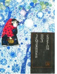

Земляника под снегом

Сказки японских островов. Кого-то они удивят своеобразием, а кто-то обнаружит, что во всех сказках мира есть пара-тройка общих сюжетов. Для детей и взрослых, а также для тех, кто интересуется культурой Дальнего Востока.